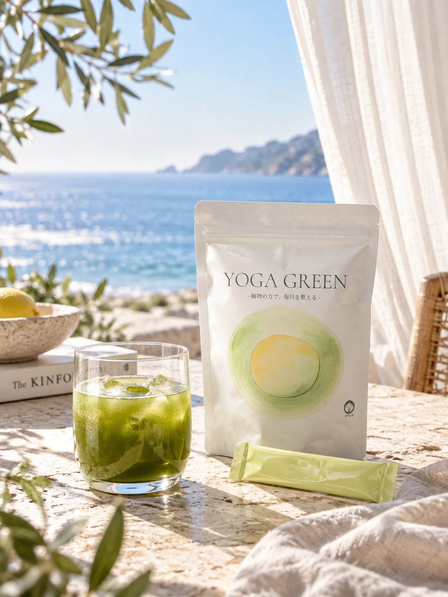
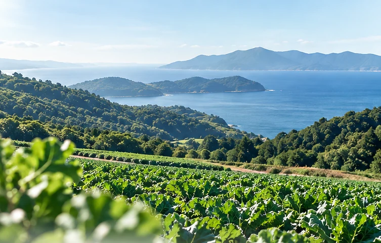
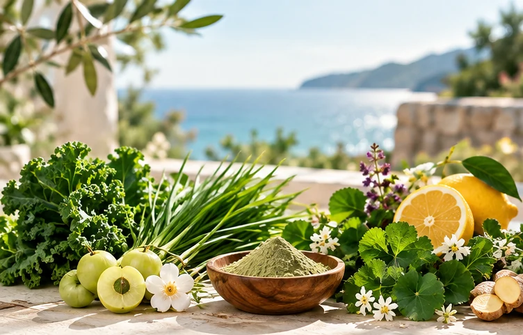
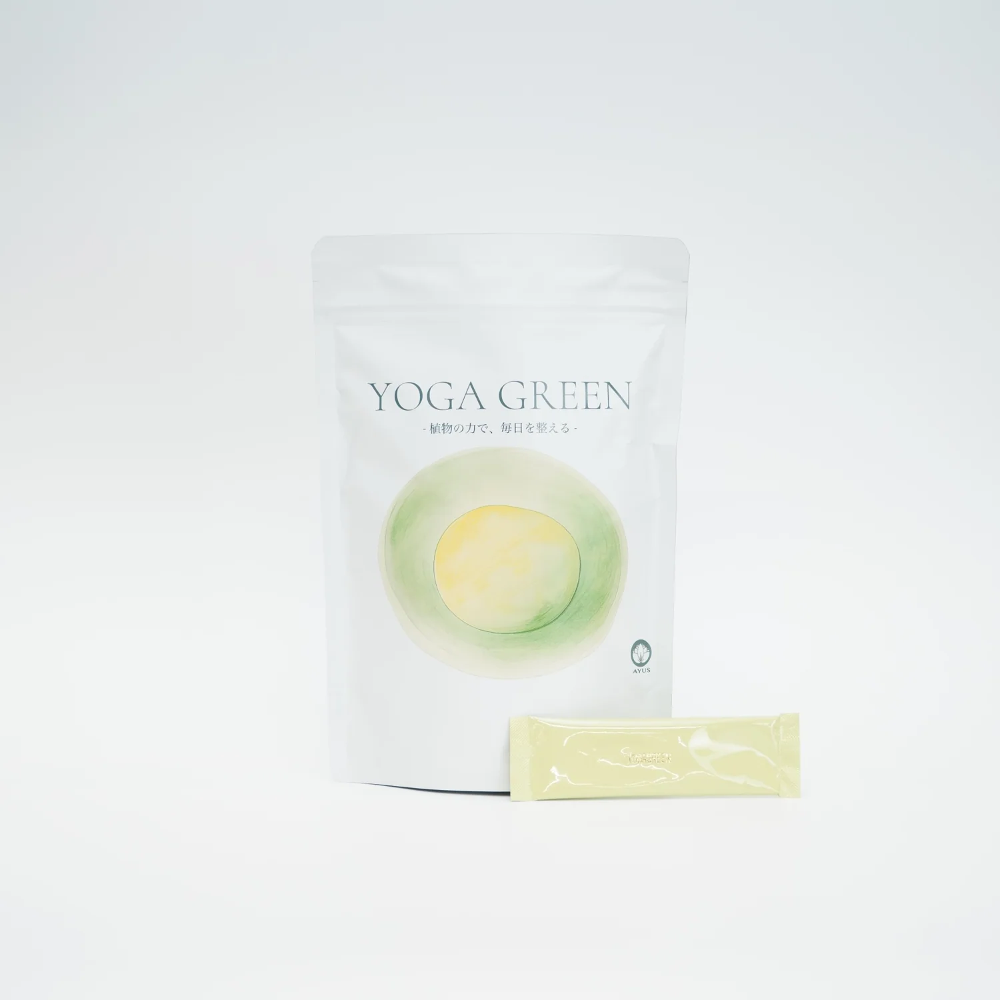

9種の植物素材
ケール・大麦若葉に加え、アムラ、ツボクサ、シロゴチョウ、レモン、グアバ、カレーリーフ、ホーリーバジルを使用。
日常に、小さなリトリートを。
青い海を眺める朝。
カーテンを揺らす、静かな風。
何気ない一日にも、心地よい余白を。
YOGA GREENは、そんな時間に寄り添う
植物由来のボタニカルドリンクです。

ヨガをする時間のように、呼吸を意識して、自分自身と向き合うひととき。
忙しい日も、何もしない日も。
お気に入りの場所で、緑の一杯を。
特別な場所に行かなくても、いつもの暮らしの中に心地よさを。
※この写真はブランドの世界観を表現したイメージです。
YOGA GREENのベースは、九州産の有機ケールと有機大麦若葉。
植物素材の個性を大切にしながら、毎日の一杯として取り入れやすいブレンドを目指しました。
※有機JASに関する表現は、使用原料についての説明です。製品全体の有機認証を意味するものではありません。

2種の有機青葉に、世界各地で親しまれてきた7種の植物素材を組み合わせました。原料の選定から、抽出方法、品質の確認まで。一杯の背景にあるこだわりをご紹介します。
ケール・大麦若葉に加え、アムラ、ツボクサ、シロゴチョウ、レモン、グアバ、カレーリーフ、ホーリーバジルを使用。
7種の植物素材には、水を使って抽出した原料を採用していると販売資料で紹介されています。
販売資料では、原料の残留農薬検査や基準に沿った確認を実施していることが紹介されています。
素材それぞれの特徴を活かした、YOGA GREENのボタニカルブレンド。

毎日口にするものだから、原料の選定だけでなく、品質の確認も大切に。
ご提供いただいた販売資料では、アムラエキスの残留農薬検査について「185項目すべて不検出」と紹介されています。また、その他の植物素材についても検査・基準確認の説明があります。
※上記は提供資料に記載された内容の紹介です。検査成績書の原本、対象ロット、検査日、検査機関、対象原料の範囲は公開前にご確認ください。すべての原料・製品に一律に適用される結果とは限りません。
水に溶かして、すっきりと。
豆乳やヨーグルトなど、お好みのアレンジでも。
黄緑色の個包装スティックを開け、グラスに入れます。
水、またはお好みの飲み物100〜150mlを目安に加えます。
全体をよくかき混ぜて、お召し上がりください。
※飲み方・量は提供された販売画像を参考にしています。実際の製品表示もご確認ください。

YOGA GREEN
ボタニカルドリンク
20包入り。朝のひとときにも、仕事の合間にも。自分らしいペースで楽しむ、毎日の習慣に。
1包あたり約185円
ONLINE SHOPで購入する※価格・在庫・配送・原材料の正式表示は購入先をご確認ください。
FEEL BALANCE EVERY DAY